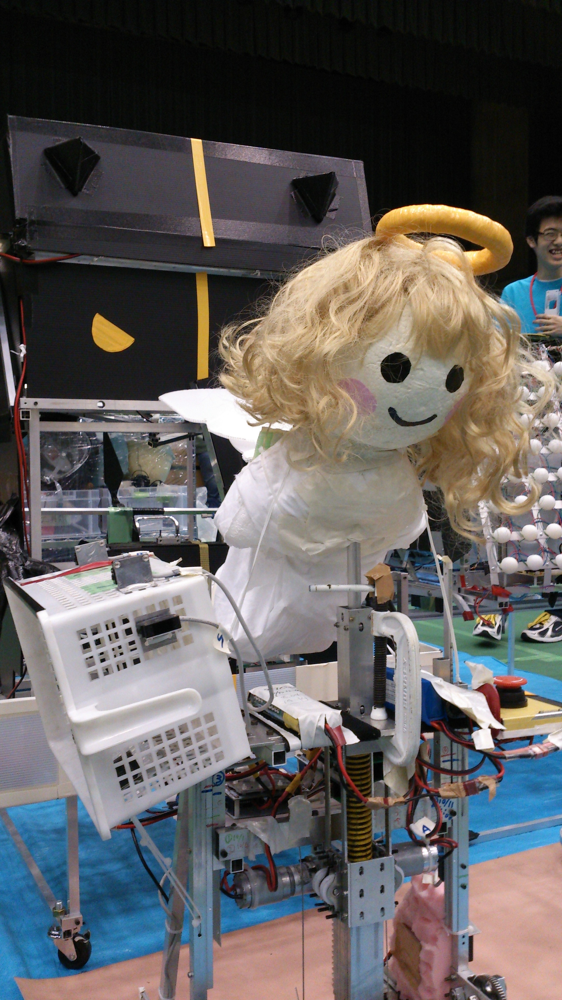
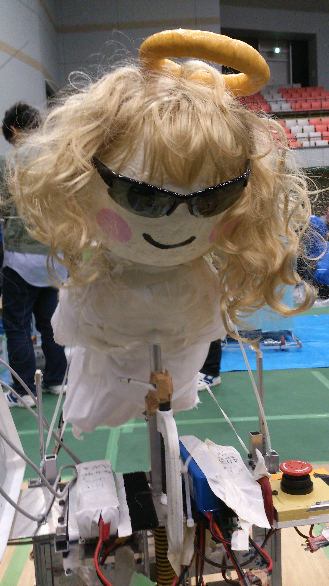
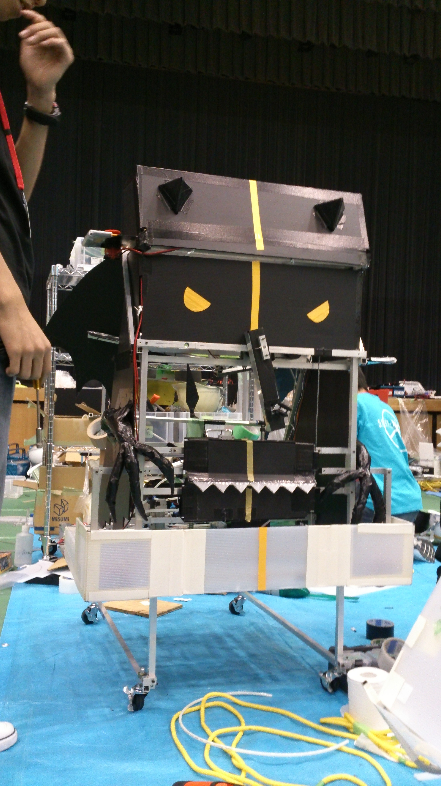

マシン名：天使run魔

この年の競技はジャンパーロボットと縄回しロボットが協力して縄跳びを行う「shall we jamp !」です。
上の画像はジャンパーロボットの「バッハ」と縄回しロボットの「シューベルト」です。
ジャンパーロボットの「バッハ」は天使、縄回しロボットの「シューベルト」は悪魔をモチーフにしています。
私たちはチームコンセプトを「魅せる」としていたので他高専とかぶらないものを考えた結果、天使と悪魔になりました。
「息を合わせる」動作として、天使、悪魔共通の羽を使った「羽ばたき」を行いました。
「バッハ」ははねを回転させ、「シューベルト」はリンク機構によって羽ばたきを表現しています。
このように羽ばたき方を変えることで天使の可愛さ、悪魔の恐ろしさをわけて表現しました。
大会では１回戦敗退という結果でした。
バッハ

このマシンの特徴は慣性を使ったジャンプ機構です。
ラックと欠歯歯車を用いてばねを収縮させ、そのばねを解放したときに発生する慣性でジャンプしています。
ばねの収縮にはMABUCHI motor RS555VC を使用しています。
歩行機構はチェビシェフリンク機構でを使用しています。
また、このマシンの側面にはazbilの赤外線センサーが取り付けてあり、このセンサーが縄回しロボットに取り付けてある
反射板から戻ってきたのを検知してジャンプの同期をとっています。
シューベルト

このマシンの特徴はベルトを用いた回転機構です。
どのようなものかと言うと２つのプーリーをベルトでつなぎ、片方のプーリーを固定した状態で回転させるというものです。
この機構のメリットはねじれが生じない点です。この機構の以前にもいくつもの回転機構を試作してきましたが、
それらの機構では、どうしてもねじれが生じてしまう点が問題として挙げられていました。
しかしこの機構ではねじれが生じないため、「いつまでも飛び続ける」というチームの目標をより実現しやすくしました。
また、走行部は四輪駆動になっていて、MABUCHI motor RS540SHを使用しています。
タイヤは大会フィールドと相性が良いインラインスケート用のタイヤを使用しました。
これにより安定した走行が可能になりました。さらに壁側の面にスイッチをつけることでより安定した走行が可能になっています。